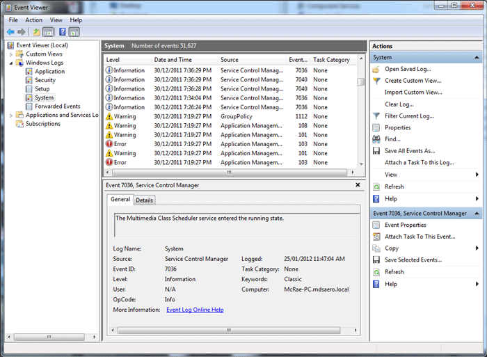

How To – Review Windows Log Files
This How To provides the steps required to review the System Log, Application Log and
Security Log files on any of the Windows-based computers.
To Review the Windows Log Files
Log files are created automatically by the Windows operating system.
- Type Administrative Tools in the Windows search field and select it from the results.

The Administratve Tools window is displayed
- From the Administrative Tools window, select Event Viewer.
The Event Viewer System Log screen is displayed.
The System Log, Security Log and Application Log icons are displayed under the Windows Logs folder in the tree view panel.

- Select the System icon and review the System Log for any services that failed to start (indicated in red).
- Select the Application icon and review the Application Log for any programs that failed to start (indicated in red).
- Select the Security icon and review the Security Log for records of users who have accessed security-tagged functions in the system.